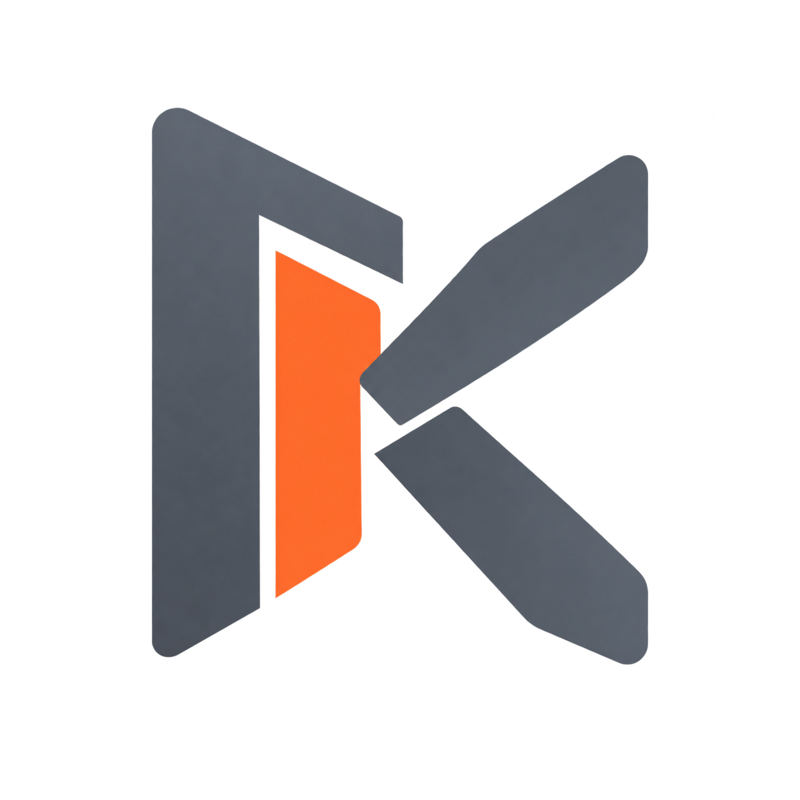
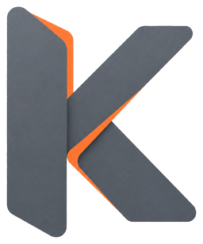
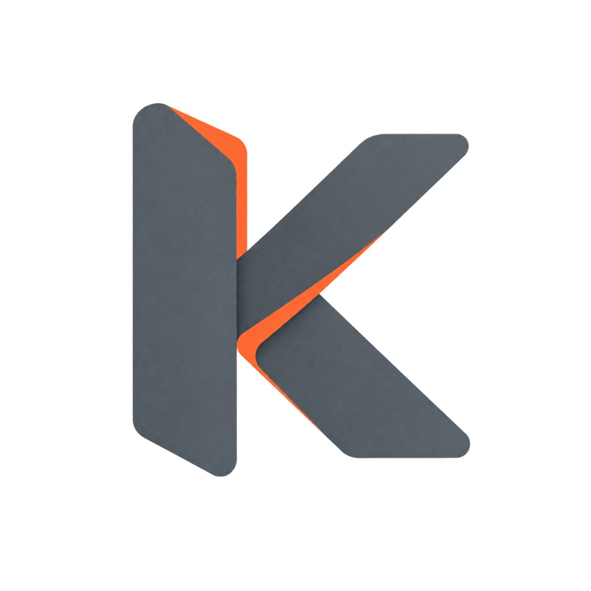
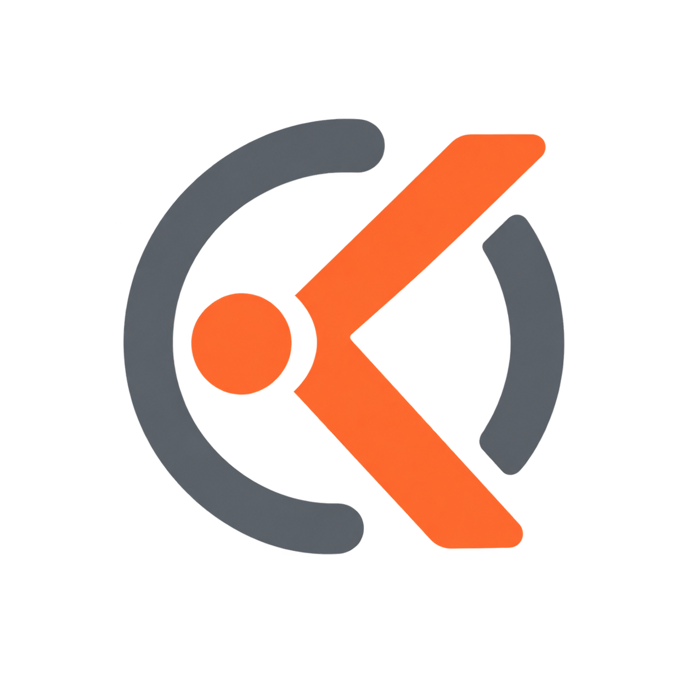

Направление 01
AI Portal
Два слоя сходятся в одном центре: сайт и AI образуют единый вход в диалог. Самый технологичный и собранный вариант.
Brand exploration · 13 августа 2026
Из серии металлических K выбран вариант с чистым силуэтом и единым оранжевым AI-слоем. Ниже сохранены исходные направления, из которых вырос финальный выбор.

Холодный графитовый K раскрывает фирменный оранжевый слой внутри. Знак уже проверен в шапке, Studio, виджете, footer и favicon: он остаётся узнаваемым и не зависит от объёмного фона.

Два слоя сходятся в одном центре: сайт и AI образуют единый вход в диалог. Самый технологичный и собранный вариант.

Оранжевый живой слой накладывается на металлическую основу. Передаёт идею Kaigo как нового интеллектуального слоя поверх сайта.

Сигнал ответа и диалог в одном компактном символе. Самый дружелюбный вариант для продукта, который должен помогать посетителю.